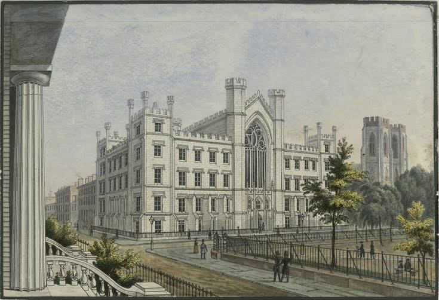
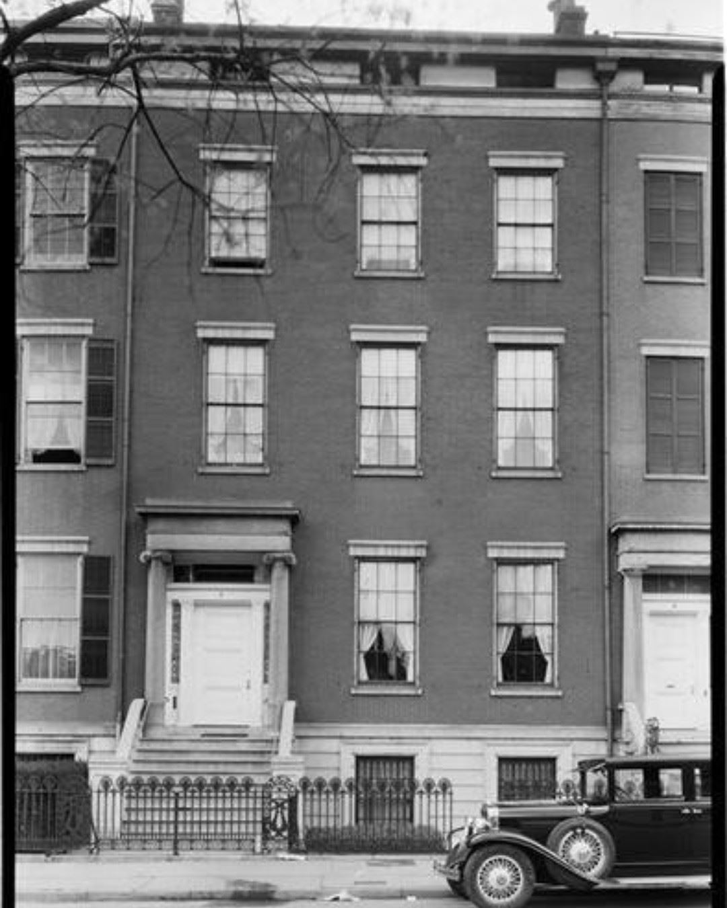

From the Archives · 1833
The Founding of the Delta Chapter at NYU

The founding of the Delta Chapter at New York University is incredibly important for Psi Upsilon as it is the first branch of our fraternity from Union College, and in 1837 took some consideration as our founder's did not plan on extending Psi Upsilon beyond Union College when they began our society.
While many people were influential in the founding of the Delta Chapter there are two brothers who were particularly instrumental: Jeremiah Skidmore Lord, Delta 1836 and Isaac Dayton, Theta 1838. Both were classmates at "The University of the City of New York" (the original name of New York University) in 1833 and both transferred to Union College in 1834 and 1835 respectively, and became members of the Theta Chapter soon after. Jeremiah Skidmore Lord went back to NYU in the Fall of 1834 and graduated in 1836, thus he is considered the first brother of the Delta Chapter - but together these brothers planted the seed of a new branch of Psi Upsilon and the Theta started a committee to consider starting branches of the society in November of 1835.
The University Building on Washington Square East, location of the University of the City of New York beginning in 1835
It wasn't until December 6, 1836 that a meeting between a group of students and Isaac Dayton occurred in the city that the "the Embryo Branch of the Psi Upsilon Society" was formed and on January 12th, 1837 a petition was sent to the Theta Chapter for approval of a "branch of the society" and was then accepted on January 24th. The account of which from the Annals of Psi Upsilon:

"Dayton, presumably accompanied by Taylor (William Taylor, Theta '38) and Monilaws (George Monilaws, Theta '39) , appeared with the petition before the Society at Union on January 24, 1837 and on that date the request for the incorporation of The Branch at N.Y. University was unanimously adopted. On February 3, 1837 it was reported by Maunsel Van Rensselaer, Theta '38, that the necessary documents had been transmitted to New York, with authority to modify the by-laws to suit the circumstances of the members of The Branch. Upon their safe arrival a meeting was held February 11, 1837 at the residence of Mr. John Johnston … No.7 Washington Square North… when they were formally adopted with the provision of making such alterations as are necessary for the wants of "this association." The official date of the establishment of the Delta as fixed by The Fraternity, is therefore, February 11, 1837."
No. 7 Washington Square North, home of John Taylor Johnson, Delta 1839 and location of the initiation of the original chapter members.
John Taylor Johnson, Delta 1839 would go on to be the first president of the Metropolitan Museum of Art in 1870 and also the President of the Council of the University of the City of New York in 1872.

You can read more about the Founding of the Delta, and its early life at New York University, at our online archives site.
We plan to highlight stories about our past on a regular basis to help promote our online digital archive collection as well as share important milestones in our fraternities storied history that may otherwise be overlooked. If you would be interested in helping us create content please contact our Director of Engagement Jonathan Chaffin, Gamma Tau '00 at jonathan@psiu.org.